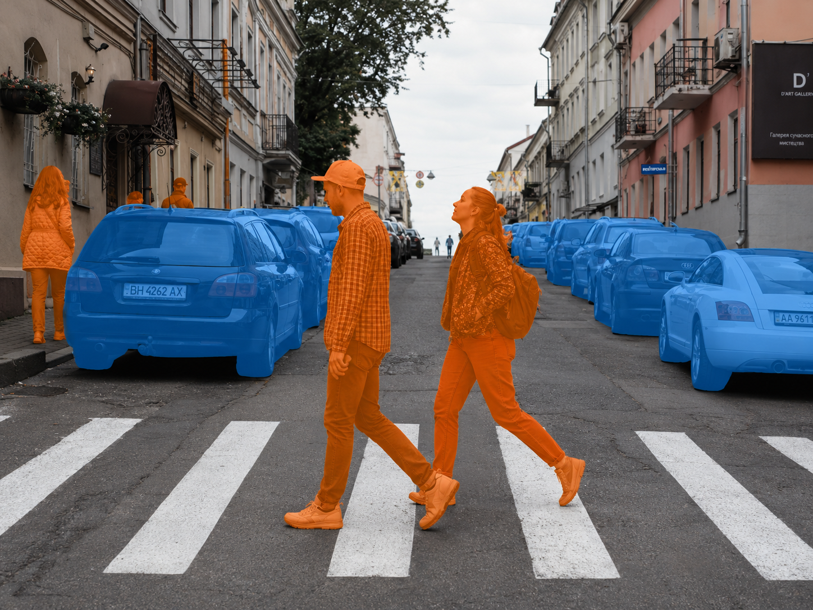

Mono Cap Cam
High-volume first-person capture.
Nero's standard monocular egocentric capture platform for scalable human demonstration and real-world perception datasets.
Explore Mono Cap Cam
Nero captures real work in real environments and turns it into structured training data for robotics and embodied AI.
The Problem
The actions robots need to understand happen inside warehouses, kitchens, workshops, stores, construction sites and thousands of other environments that were never recorded as machine-learning datasets. Nero builds the infrastructure to capture them.
The Network
Nero deploys capture systems into operating businesses instead of staging demonstrations in a lab.
2027 Collection Target
240
live collection sites
2027 Collection Target
300,000
cumulative hours captured
Building toward these figures by the end of 2027 — not current totals.
Capture Systems
Different models need different observations. Nero designs its own capture hardware so collection architecture can be changed around the requirements of the dataset, instead of forcing every customer into the same sensor configuration.
Mono Cap Cam
Nero's standard monocular egocentric capture platform for scalable human demonstration and real-world perception datasets.
Explore Mono Cap Cam
Stereo Cap Cam
Synchronized stereo vision designed for datasets that need depth estimation, geometric understanding, hand-object spatial relationships and 3D scene reconstruction.
Explore Stereo Cap CamCustom Programs
Some programs need monocular RGB. Others need stereo vision, depth, inertial measurements, a wider camera baseline or synchronized observations from multiple viewpoints. Nero can engineer a capture configuration around the client's collection specification and deploy it through the same data infrastructure.
Available custom program configurations. Not every configuration is currently deployed on every vertical.
The Data Engine
01
Capture
Real tasks, real environments, Nero hardware.
02
Ingest
Encryption, integrity checks, sensor synchronization, dataset indexing.
03
Process
Calibration, frame extraction, quality filtering, redaction where specified.
04
Enrich
Tracking, segmentation, depth, pose, actions, interactions, language.
05
Validate
Automated QA, human QA where specified, schema validation, coverage analysis.
06
Deliver
Client schema, versioned datasets, API / object storage / batch, continuous feed.
Commercial Models
01
Non-exclusive access to a Nero dataset.
02
A collection program produced for one client with agreed exclusivity.
03
An ongoing stream of newly captured and processed real-world data to an agreed specification.